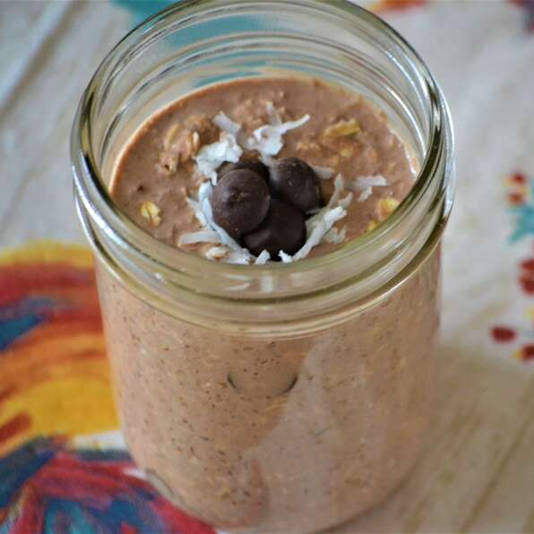

Chocolate Coconut Overnight Oats

Ingredients
- 1 Cup Chocolate-Flavored Almond Milk
- 3/4 Cup Old-Fashioned Rolled Oats
- 1 TBSP Chia Seeds
- 1 TBSP Packed Shredded Sweetened Coconut
- 1 TBSP Maple Syrup
- 1 TBSP Unsweetened Cocoa Powder
- Hint Vanilla Extract
Directions
-
Mix almond milk, oats, chia seeds, coconut, maple syrup, cocoa powder,
and vanilla extract in a 12-ounce mason jar. Cover and refrigerate, 8
hours to overnight. Stir and serve cold.